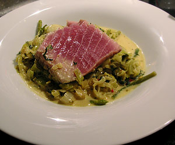

Alle Rezepte
Thunfisch auf Lauchgemüse
5 von 6

Foto vom Abend
Gekocht am Freitag, 27. Januar 2006
Montagsplausch Nr. 131. Der Abend hiess «Plausch bei Felix».
- Wetter
- weiss nimmer..
- Getränke
- Oekonomierat Rebholz, Riesling Im Sonnenschein Spätlese trocken, 2004
- SD Jacob Duijn, Spätburgunder, 2001
- Chateau Bouscassé, Vieilles Vignes, 1992
- Rosso di Costanza, Aglianico del Vulture, 2000
- Tresantos roble, 2001
- Chambolle Musigny, 1er Cru Les Chatelots, Bernard Amiot, 1996
- Alzero, Giuseppe Quintarelli, Cabernet Franc, 1992.
- Am Tisch
- Claudia, Felix (Koch), Thommy, Lucas, Gäbi und Beni
- Dazu gab es